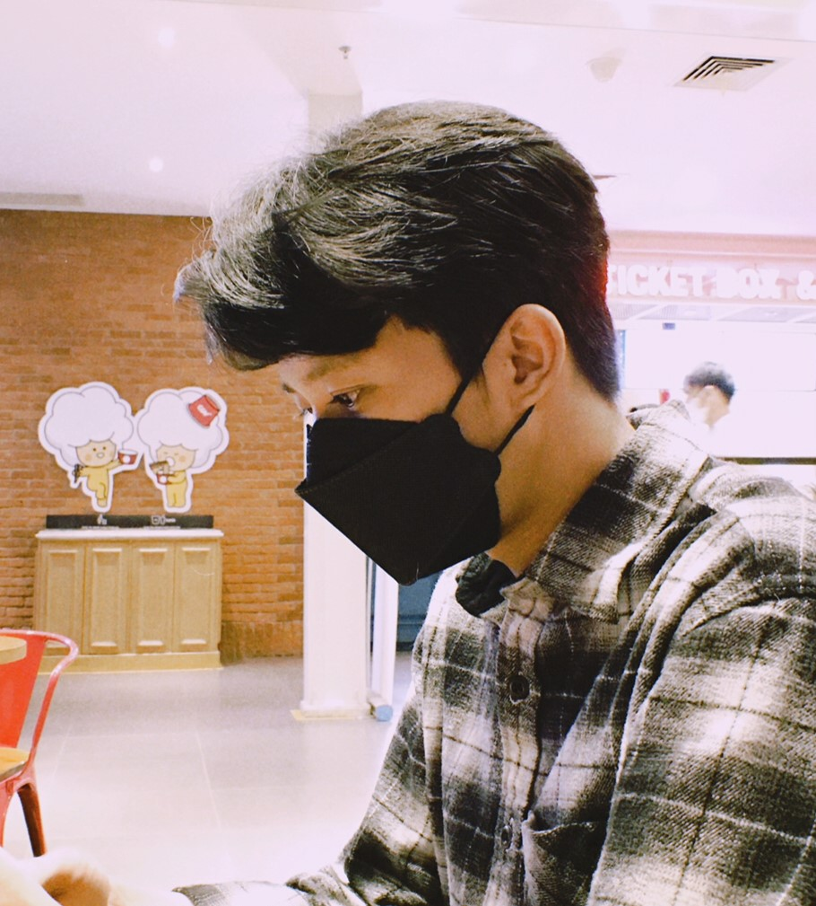

Halo! Saya Hadi Prasetiyo mahasiswa Universitas Mulawarman, Fakultas Teknik, Program Studi Sistem informasi Semester 5. Usia saya 21 Tahun, saya berasal dari Samarinda, Kalimantan Timur. saya tertarik pada komputer sudah sejak lama, kemudian saat lulus SMA saya memutuskan mengambil Program Studi Sistem Informasi, karena dari info yang saya dapat Program Studi tersebut berhubungan dengan komputer seperti pemrograman, walaupun saya tidak memiliki skill pemrograman sama sekali saat lulus SMA.
Saya terus belajar setelah masuk dunia perkuliahan, sedikit demi sedikit mulai banyak mengetahui dunia pemrograman, dan pada akhirnya saya mengenal Desain WEB HTML dan semakin tertarik untuk mempelajarinya. Suatu saat saya ingin bekerja disuatu perusahaan yang sangat identik dengan pemrograman.
Saya memiliki cita cita menjadi programmer yang sukses, walaupun sekarang ini saya masih terbilang baru belajar tetapi saya akan terus berusaha belajar untuk mendapatkan ilmu yang lebih luas. Saya ingin bisa membuat website profesional yang suatu saat bisa berguna bagi suatu perusahaan atau masyarakat.
 About Me